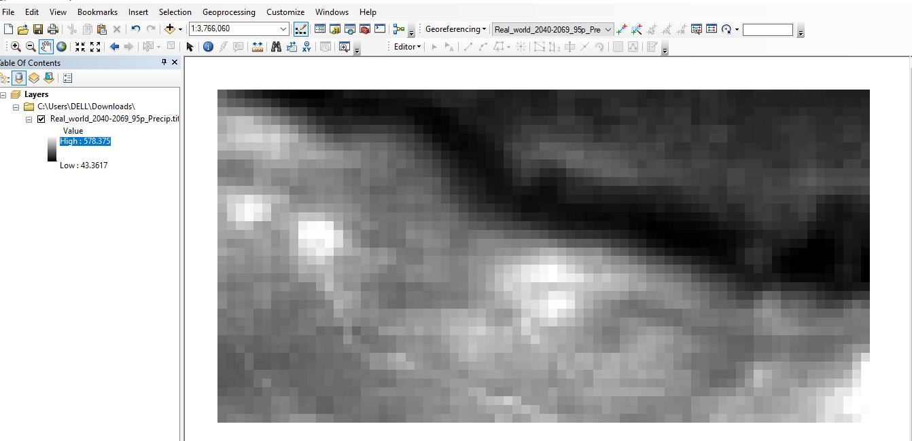
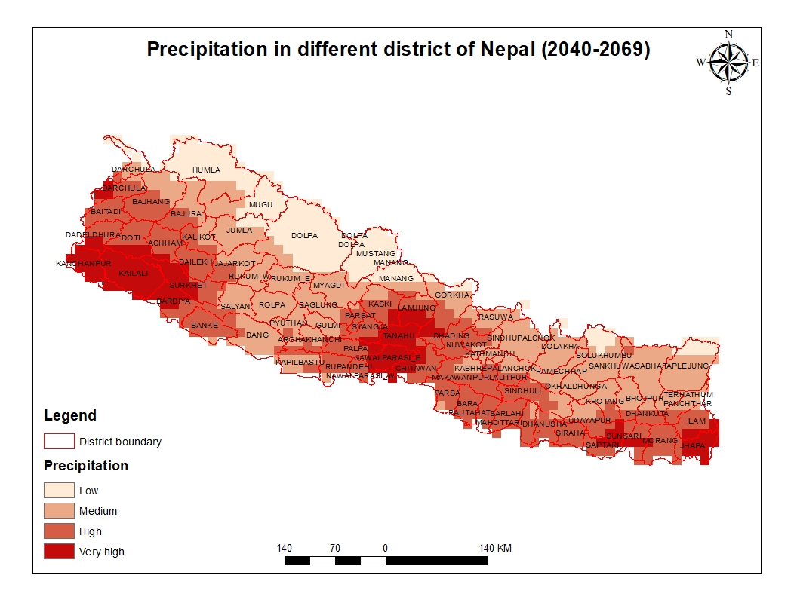

8 Previous Workshops
8.1 Participant Maps
Participants created their own maps with the climate data.
Map within Google Earth Engine by Keshav Dubedi (top left), Lalita Joshi (top right), Damber Bista (bottom left), and Abash Paudel (bottom right).

Geotiffs that have been exported and can now be imported into any mapping software as demonstrated by Bipin Bhattarai.

Arbin Poudel applied his previous experience with GIS to clip his geotiff to Nepal.

Suraj Bist applied his previous experience with GIS to enhance his final map.

8.2 Videos
General Session
Techincal Session - Day 1
Technical Session Day 1 - Cohort A - Sunday, September 11, 2022
Technical Session Day 1 - Cohort B - Friday, September 16, 2022
Techincal Session - Day 2
Technical Session Day 1 - Cohort A - Monday, September 12, 2022
Technical Session Day 1 - Cohort B - Saturday, September 17, 2022
Techincal Session - Day 3
Technical Session Day 3 - Cohort A - Sunday, September 18, 2022
Technical Session Day 3 - Cohort B - Friday, September 23, 2022
Techincal Session - Day 4
Technical Session Day 4 - Cohort A - Monday, September 19, 2022
Cohort B had no video recording for Day 4.
8.3 Speaker Bios
Hosts
Rajesh Kumar Rai, PhD
Dr. Rajesh Rai is the Director at School of Forestry & Natural Resource Management, Institute of Forestry at Tribhuvan University. Rajesh teaches forest economics, sustainable forest management and sustainable financing.
Rajesh has worked in community based forestry programs where he has been involved in valuation of ecosystem services, social benefit-cost analysis, policy research, invasive plant species management, payment for ecosystem services, REDD and Discrete Choice experiments in developing countries.
Rajesh completed MSc in Forestry, and Forest Ecology and Management from University of Eastern Finland, and Albert-Ludwigs-Universität Freiburg im Briesgau. Rajesh received his PhD in Environmental Economics from Deakin University, Australia.
Bishal Bharadwaj
Bishal Bharadwaj is an economic geographer by orientation. Bishal is currently a postdoctoral research fellow at Net Zero Australia, UQ Dow Centre for Sustainable Engineering Innovation, University of Queensland. Bishal is engaged in Hydrogen energy related project at School of Chemical Engineering, UQ.
Bishal has also served as section officer and Undersecretary in civil service of Nepal. Bishal studied MSc Climate Change from UCL, London in 2016 and is about to complete his PhD from University of Queensland. Bishal is interested in evaluating environmental policies to find strategies to make sure environmental policies are effective and the impacts are equitable. For additional information about Bishal, visit www.bishalbharadwaj.com.

Suman Shree Neupane Suman Shree Neupane is a wildlife and biodiversity conservation researcher. His areas of interest mostly cover quantitative ecology, wildlife management, conservation biology and natural resource economics. In addition to this, he is also a GIS practitioner and interested in ecological and climate change modelling. He love travelling and trekking around remote places in Nepal.
Suman completed my Masters in Wildlife Management and Biodiversity Conservation from School of Forestry and NRM. He graduated from Kathmandu Forestry College with a BSc in Forestry Science. He believes our research is a collective effort to make this planet a better place to live by making an impact on various domains. You can find more about Suman on: Home | Suman Shree Neupane
Dr. David Byrne
Dr. David Byrne uses models, big data analysis, and mathematical tools like machine learning to understand the physical risks that climate change poses to vulnerable communities. He brings to bear his background in mathematics and expertise on sea level rise and storm surge as a member of Woodwell’s risk team.
David earned his doctoral degree in physical oceanography, studying ways of improving real-time forecasts for dangerous storm surges. Since then, he has worked as a coastal ocean scientist at the National Oceanography Center in the UK, conducting coastal modeling, analyzing large datasets, and advocating for scientific best practices. Dr. Byrne is motivated by the desire to help vulnerable communities through transparent and accessible risk modeling.
Darcy Glenn
Darcy Glenn utilizes climate modeling to provide information to decision-makers about the near-term impacts of climate change as part of Woodwell Climate Research Center’s Risk program. She works with both municipalities and business investors who aim to adapt to the changing climate.
Previously, Darcy worked for two local governments: Park City, Utah and Summit County, Utah. There she had the privilege to work on the “Most Ambitious Climate Goals in North America” allowing her to work on carbon accounting, wildfire adaptation, regenerative agriculture, and electrification policy. She received her MSc in Climate Change from University College London.
Speakers
Dr. Buddhi Sagar Poudel
Dr. Poudel is a Joint Secretary and Chief of The Climate Change Management Division of the Ministry of Forests and Environment. He has a PhD from Charles Sturt University, Australia. Dr. Poudel served as a Director General of the Department of Plant Resources; Chief of the REDD Implementation Center; and Secretary of the Ministry of Industry, Tourism, Forests and Environment of the Gandaki Province.
David McGlinchey
David McGlinchey oversees Woodwell Climate Research Center’s partnerships and policy outreach. As a part of his work, he regularly engages congressional climate leaders in Washington, D.C., and has represented the Woodwell Center at UN Climate Change Conferences in Marrakesh, Morocco; Bonn, Germany; and Madrid, Spain. He has also accompanied Woodwell scientists into the field, from a permafrost monitoring station in interior Alaska to the Tanguro research station on the southern edge of the Amazon.
He is a journalist and lawyer, and before joining Woodwell he worked on communications and government relations for global biotechnology company Novozymes. Prior to that, he served as the director of communications and marketing for the Manomet Center for Conservation Sciences.
He serves on the board of the Spatial Informatics Group—Natural Assets Laboratory, and is on the global steering committee of the Nature 4 Climate initiative. He received his undergraduate degree from Wake Forest University, and his law degree from Suffolk University Law School.
Damber Bista
Damber Bista is conservation ecologist by training, with research interest on understanding co-existence between human and wildlife. He brings in experience of over a decade in wildlife conservation. Most of his work is focused on red panda, a habitat specialist of the Himalaya. His work focuses on application-led research on the movement and spatial ecology of the montane mammals. Mr. Bista is currently a PhD candidate at the University of Queensland, where he is studying the red panda’s response to disturbances and habitat fragmentation in the human-dominated landscape.
8.4 Overview
Goals of Training
Participants will be able to communicate how climate change will impact Province 1.
Participants will be able to work with climate model data and create their own maps and visualizations.
Participants will be able to use the data to help tell their stories.
Learning Outcome
After the completion of the program, participants will be able to discuss risk maps and describe the process to their friends and community.
Technical sessions ONLY - students will receive:
Regional climate model data for Nepal
Maximum temperature (daily) 1990-2019 and 2040-2069
Minimum temperature (daily) 1990-2019 and 2040-2069
Maximum wet-bulb temperature (daily) 1990-2019 and 2040-2069
Precipitation (daily) 1990-2019 and 2040-2069
Example codes that participants can use to further explore their own climate risk questions.
8.5 General Sessions
General Sessions were held on Sunday, September 4, 2022, 4-7 pm (NPT) and Saturday, September 10, 2022, 4-7 pm (NPT).
Planned Modules
A .pdf of planned modules can be found here.
*Participants were be polled on preferences for Modules 3a-c.
Module 1 Introduction (Bishal Bhardwaj)
Module 2 Climate Change Risk and Mountain Development (Prof. Rajesh K Rai, Ph.D.)
Module 3a* Components of Risk & Reading Maps (Darcy Glenn)
Discuss the three components of risk:
Hazard
Vulnerability
Capacity
Look at maps that show the three components of risk
Identify components
Discuss what is important and relevant on the maps
Module 3b* Introduce What Climate Models Can and Cannot Do (Darcy Glenn)
Importance of Ensembles
Temporal Resolutions
If time frames are too short, the results will not be accurate.
Best practice is to look at data over a 30 year time frame.
Spatial Resolutions
Complex landscapes are better modeled with high resolution.
Mountains are more difficult to model than flat plains.
Very good at rates of change
- Overview of basic modeling methodology - conceptual
Module 3c* Risk and Social Communication (Speaker To Be Decided)
Module 4 Recap and Q&A (Bishal Bharadwaj, Prof. Rajesh K Rai, Darcy Glenn)
Powerpoints
PDF files of the Powerpoints can be found here.
8.6 Technical Sessions
There were two sets of technical sessions.
Schedule
Cohort A
Day 1: Sunday, September 11, 2022, 4-6 pm (NPT)
Day 2: Monday, September 12, 2022, 4-6 pm (NPT)
Day 3: Sunday, September 18, 2022, 4-6 pm (NPT)
Day 4: Monday, September 19, 2022, 4-6 pm (NPT)
Cohort B
Day 1: Friday, September 16, 2022, 4-6 pm (NPT)
Day 2: Saturday, September 17, 2022, 4-6 pm (NPT)
Day 3: Friday, September 23, 2022, 4-6 pm (NPT)
Day 4: Saturday, September 24, 2022, 4-6 pm (NPT)
Planned Modules
A .pdf of planned modules can be found here.
*Participants were polled on preferences for Modules 1a-d on Day 2.
Day 1
Before the session, make sure you have access to Google Earth Engine and download the practice data sets for Technical Session Day 1.
Module 1 Ensure All Students Able to Log On (Darcy Glenn)
Module 2 Introduction to Google Earth Engine (Darcy Glenn)
Upload files from computer & catalogue
Basic commands
Display data
Calculate the number of days above 25°C (Demonstration)
- Students can choose from 25°C, 30°C, 35°C, 40°C, or 45°C
Module 3 Recap and Q&A (Bishal Bharadwaj, Prof. Rajesh K Rai, Darcy Glenn)
Day 2
Before the session, download the practice data sets for Technical Session Day 2.
Participants were polled on preferences for Modules 1a-d. The Module selected was determined by Day 1 of the Technical Sessions. This gave participants time to download data.
Module 1a* Using Daily Data: Projecting Extreme Heat Days (Darcy Glenn)
Review projection methodology concept
Wet-bulb temperature: Heat & humidity measurements are related to human health.
Use Google Earth Engine to project days above 28°C wet-bulb
Export data
Module 1b* Using Daily Data: Projecting Extreme Rainfall (Darcy Glenn)
Review projection methodology concept
Precipitation: Extreme precipitation can result in flooding and affects infrastructure, agriculture, and water supply.
Use Google Earth Engine to project changes in the amount of rain that falls in the top 5% of rainy/snowy days
Export data
Module 1c* Using Daily Data: Projecting Night Temperatures (Darcy Glenn)
Review projection methodology concept
Minimum temperature: When the nighttime temperature is too high, our bodies cannot recover during a heatwave.
Use Google Earth Engine to project changes to heat waves with high nighttime temperatures
Export data
Module 1d* Using Daily Data: Who is Affected by High Temperatures? (Darcy Glenn)
Review projection methodology concept
Maximum temperature: Thresholds as seen in the Day 1, but now with daily data
Import information from Google Earth Engine’s Catalogue to see who will be affected
Export data
Module 2 Recap and Q&A (Bishal Bharadwaj, Prof. Rajesh K Rai, Darcy Glenn)
Day 3
Module 1 Participant-led map making
Module 2 How Risk Mapping Skills Can Help Society (Bishal Bharadwaj, Prof. Rajesh K Rai, Darcy Glenn)
Module 3 Recap and Q&A (Bishal Bharadwaj, Prof. Rajesh K Rai, Darcy Glenn)
Homework If maps are not complete for the presentation, you may need to meet outside of the workshop.
Data sets
Data sets and scripts can be found here.
The DataFiles_Technical_Session_Day_1.zip includes the code scripts and data sets needed for Day 1. Please download before Day 1.

Videos
Technical Session Day 1 - Cohort A - Sunday, September 11, 2022
Technical Session Day 1 - Cohort B - Friday, September 16, 2022
Bishal Bharadwaj and Suman Shree Neupane facilitated the session for Cohort A. Bishal Bharadwaj and Dr. David Byrne facilitated the session for Cohort B. Darcy Glenn walked participants through:
Where data came from
How to download data from Github
The parts of the Google Earth Engine dashboard
Creating a repository
Uploading files
Creating file folders
Importing data from file into scripts
Saving scripts
Combining 3 models into an ensemble
Finding the difference between the ensemble’s future data and past data
Changing a map’s appearance
Using the Explorer tool to find values at a specific location.
Technical Session Day 1 - Cohort A - Monday, September 12, 2022
Technical Session Day 1 - Cohort B - Saturday, September 17, 2022
Technical Session Day 2 - Cohort A - Monday 12, 2022
Technical Session Day 2 - Cohort B - Saturday 17, 2022
Bishal Bharadwaj and Suman Shree Neupane facilitated the session. Darcy Glenn walked participants through:
Applying a model ensemble’s difference to reanalysis data to find future values
Formatting maps
Dr. David Byrne presented:
The Google Earth Engine catalog
How to import different types of population data from the catalog
For Cohort B, Dr. David Byrne hosted a breakout room that walked participants who missed Day 1 through the introduction to Google Earth Engine and their first code.
Technical Session Day 3 - Cohort A - Sunday, September 18, 2022
Technical Session Day 3 - Cohort B - Friday, September 23, 2022
Technical Session Day 4 - Cohort A - Monday, September 19, 2022